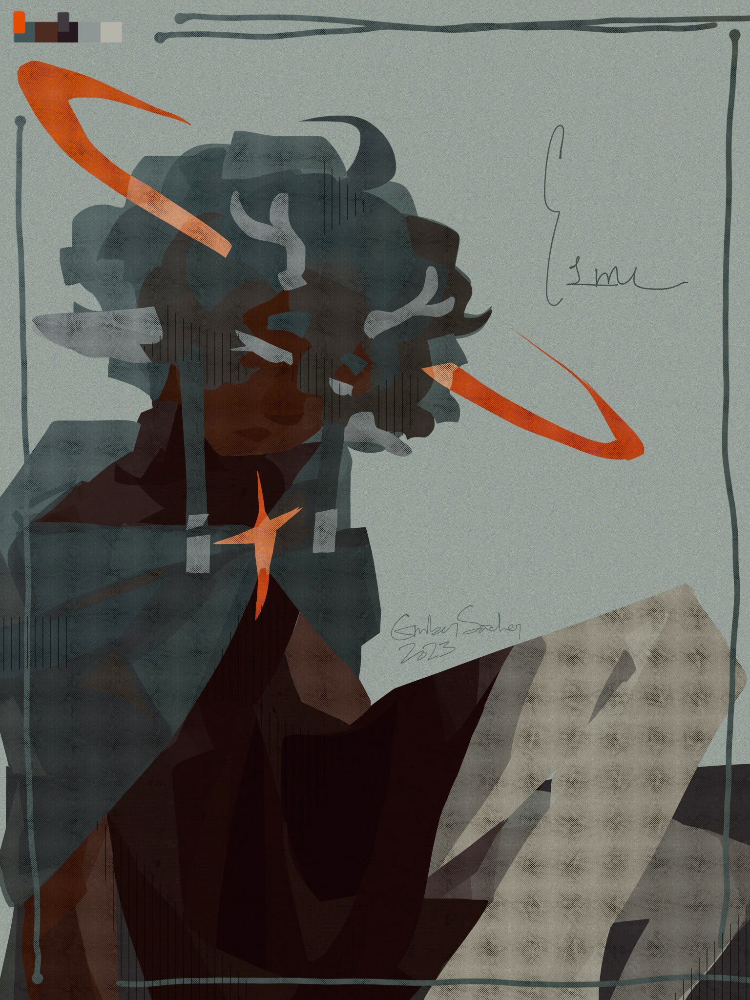

esme doodl
creation date: dec 19
characters featured: esme
lasso tool doodle that ended up looking real good imo. real suprising what textures can do to a piece, cos admittedly this thing was real bland before i slapped em on last minute. 1 noise layer & one default ibis paper overlay *-*
i dont think u can tell, but this has a biiit of an underpainting(?) aswell? wanted to experiment with that a lil too, tho i need to go harder next time. was too subtle here imo